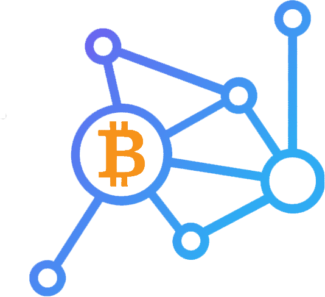
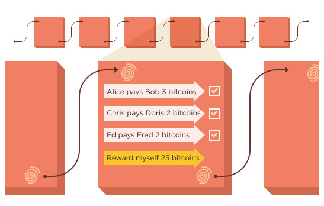

Blockchain
¿Qué es la blockchain?
Pes un gigantesco libro de cuentas en los que los registros (los bloques) están enlazados y cifrados para proteger la seguridad y privacidad de las transacciones. Es, en otras palabras, una base de datos distribuida y segura (gracias al cifrado) que se puede aplicar a todo tipo de transacciones que no tienen por qué ser necesariamente económicas.
Esa cadena de bloques tiene un requisito importante: debe haber varios usuarios (nodos) que se encarguen de verificar esas transacciones para validarlas y que así el bloque correspondiente a esa transacción (en cada bloque hay un gran número de transacciones que eso sí, es variable) se registre en ese gigantesco libro de cuentas.
A medida que pasa el tiempo, más y más transacciones van completándose y pasando a ese bloque, que tiene una capacidad limitada que depende de la estructura de la cadena de bloques y del tamaño de cada transacción. Cuando un bloque ya no admite más transacciones, llega un momento importante: el de "validarlo" o "sellarlo", que es lo que los usuarios hacen cuando hacen minería de bitcoin(no necesariamente tiene que ser de bitcoin).
Mineria
El minado consiste en la realización de una serie de complejos cálculos que requieren tiempo y (cada vez más) electricidad, pero cuando el proceso esos bloques quedan registrados de forma permanente en esa cadena de bloques, y no pueden ser modificados sin que se alteren todos los bloques que están enlazados con él, una operación que además necesitaría que la mayoría de los nodos la validasen. Para esto actualmente se usan placas de video. Hay dos formas de validar bloques.
PoW - Proof of Work
PoW es un protocolo que se utiliza como prueba de barrera para impedir acciones no deseadas sobre las redes en las que se aplica. Tanto desde el punto de vista de los ataques de denegación de servicios como otro tipo de acciones.
Se trata de tareas realizadas por ordenadores, que pueden ser más o menos complejas para quien las resuelve, pero que son muy rápidas en cuanto a su verificación. Contribuyen a generar una solución rápida y eficaz para evitar cuellos de botella en la seguridad de una red.
PoS - Proof of Stake
Prueba de participación es, junto a Proof of Work una de las principales herramientas de creación y gestión de bloques en las cadenas de bloques, contribuyendo también a la seguridad y estabilidad de las redes (que soportan a las criptomonedas).
Se trata de uno de los principales métodos de control y gestión de las cadenas de bloques. Se considera como la segunda herramienta, por detrás de Proof of Work, en cuanto a su aplicación en las Blockchains.
Se trata de un protocolo que pretende la sustitución en la cadena de bloques del modelo de gobernanza de Proof of Work . La finalidad de ambos es la misma: generar consensos que apoyan a la cadena de bloques en la creación de seguridad y generación de incentivo para las transacciones.
Se trata de un protocolo sencillo, que aporta un gran nivel de seguridad (cuanto más grande sea la red de minería de la criptomoneda más grande será la seguridad). Por otro lado, se puede implementar para diferentes modelos de hardware, siendo muy adaptable a nuevos entornos tecnológicos.
De hecho añadir nuevos bloques es un proceso cada vez más costoso, lo que hace normalmente que los mineros trabajen agrupados (los famosos "pools" que funcionan de forma similar a una cooperativa) en lugar de trabajar por sí mismos ("solo mining", con unas probabilidades de éxito/recompensa muy bajas). Cuando uno de los mineros resuelve el problema criptográfico que representan los cálculos para "sellar" un bloque, avisa a los demás, que comprueban que efectivamente es así y añaden ese bloque a la cadena de bloques completa que tienen en sus ordenadores.
Ese libro de cuentas no solo está distribuido y es seguro: los bloques enlazados (de ahí lo de cadena de bloques) cuentan con un puntero hash (codificado) que enlaza al bloque anterior, además de una marca de tiempo y los datos de la transacción, y esa información es pública. ¿Qué significa eso? Que la cadena de bloques, aunque protege la privacidad de sus usuarios, sí que permite controlar la trazabilidad de esas transacciones.
Funcionamiento
A medida que se produce una transacción, se registra como un "bloque" de datos.
Estas transacciones muestran el movimiento de un activo, el cual puede ser tangible (un producto) o intangible (intelectual). El bloque de datos puede registrar la información de su elección: quién, qué, cuándo, dónde, cuánto e incluso la condición, como la temperatura de un envío de alimentos.
Cada bloque está conectado al bloque anterior y al bloque posterior.
Estos bloques forman una cadena de datos a medida que un activo se mueve de un lugar a otro o cambia de dueño. Los bloques confirman tanto el tiempo exacto como la secuencia de las transacciones y se unen de forma segura para evitar que se alteren o se inserten entre dos bloques existentes.
Las transacciones se unen y forman una cadena irreversible: un blockchain.
Cada bloque adicional refuerza la verificación del bloque anterior y, por lo tanto, de todo el blockchain. Esto hace que dicha cadena sea a prueba de manipulaciones, lo que constituye la ventaja principal de la inalterabilidad. Esto evita que alguien malintencionado modifique la cadena y crea un libro mayor distribuido de transacciones en la que usted y otros miembros de la red pueden confiar.
Beneficios
1) Mayor confianza: Si utiliza una red privada a la que solo los miembros tienen acceso, con blockchain tiene la seguridad de que recibirá datos precisos y oportunos, además de que sus registros de blockchain confidenciales se compartirán solo con miembros específicos de la red a los que haya autorizado.
2) Mayor seguridad: Todos los miembros de la red deben llegar a un consenso acerca de la precisión de los datos y todas las transacciones validadas son inalterables ya que se registran de forma permanente. Nadie, ni siquiera un administrador del sistema, puede suprimir una transacción.
3) Más eficiencia: Con un libro mayor distribuido compartido entre los miembros de una red, se elimina el tiempo perdido en las acciones de conciliación de registros. Y para acelerar las transacciones, un conjunto de reglas, llamado contrato inteligente, se almacena en el blockchain y se ejecuta automáticamente.
Usos
Aunque la cadena de bloques está íntimamente relacionada con las nuevas criptodivisas o criptomonedas, es lógico preguntarse si este sistema sería válido para otro tipo de transacciones, y la respuesta es un rotundo sí.
De hecho eso es lo que está intentando lograr desde sus inicios la plataforma Ethereum, que tiene su propia cadena de bloques (podéis echarle un vistazo en sitios como Etherscan.io) y su propia moneda, llamada Ether.
A diferencia de bitcoin, las transacciones aquí son los contratos inteligentes —los programadores aman este concepto—, que pueden ser más o menos complejos y que permiten definir todo tipo de transacciones.
Más info...
Algunas ideas son:
Registro de propiedades: el gobierno japonés ha iniciado un proyecto para unificar todo el registro de propiedades urbanas y rústicas con tecnología de cadena de bloques, lo que permitiría contar con una base de datos abierta en la que se pudieran consultar los datos de las 230 millones de fincas y 50 millones de edificios que se estima existen en el país asiático. En Dubai están planeando algo muy parecido.
Pagos en el mundo real: una startup llamada TenX ha creado una tarjeta prepago que se puede recargar con distintas criptodivisas para luego pagar con ella en cualquier sitio como si esa tarjeta tuviera dinero convencional, sin importar si ese establecimiento acepta o no este tipo de monedas virtuales.
Almacenamiento en la nube: normalmente los servicios de almacenamiento están centralizados en un proveedor específico, pero la empresa Storj quiere descentralizar este servicio para mejorar la seguridad y reducir la dependencia de ese proveedor de almacenamiento.